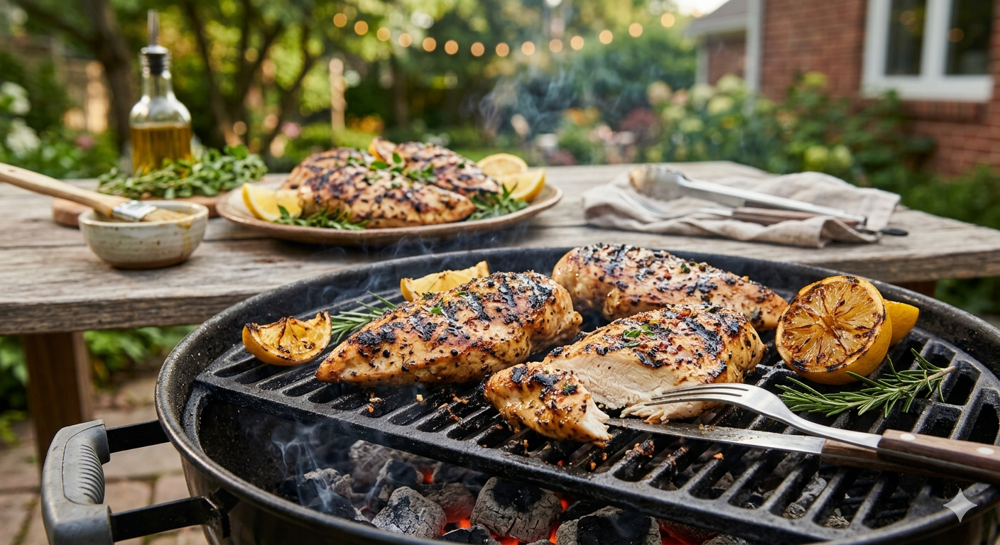

Grilled chicken

Home
Description
This grilled chicken, made with a flavorful marinade of lemon juice, garlic and seasonings, is one of our all-time favorite grilling recipes.
I’m sharing all of my secrets for making the best juicy grilled chicken breast!
Ingredients
- ¼ cup olive oil
- ¼ cup fresh lemon juice
- 3 cloves garlic, minced
- 1 teaspoon dried oregano
- ¼ teaspoon chili powder
- ▢½ teaspoon salt
- ½ teaspoon pepper
- 4 boneless, skinless chicken breasts, about 2 pounds
Steps
- 1-Combine the olive oil, lemon juice, garlic, oregano, chili powder, salt and pepper in a small bowl. Whisk until well combined.
- 2-Place the chicken breasts in a zip-top plastic bag and pound them using a meat mallet or rolling pin until they are an even thickness, about ½-inch thick.
- 3-Pour the marinade into the bag with the chicken, seal the bag, and place it in a baking dish (in case of leaks). Turn the bag to coat all parts of the chicken.
Place chicken in the refrigerator for 30 minutes to 2 hours.
- 4-Clean the grates of a gas or charcoal grill (or use an indoor grill pan). Oil the grill grates and heat the grill to medium high (375-450 degrees F).
- 5-Remove the chicken from the marinade and discard extra marinade. Grill chicken for 5-8 minutes per side, until cooked through.
The internal temperature of the chicken should reach 165 degrees F. For the best grill marks and juicy chicken,
begin cooking the chicken on a hotter part of the grill for a few minutes and then move it to lower heat to finish cooking through.
- 6-Let chicken rest for 5 minutes before serving.